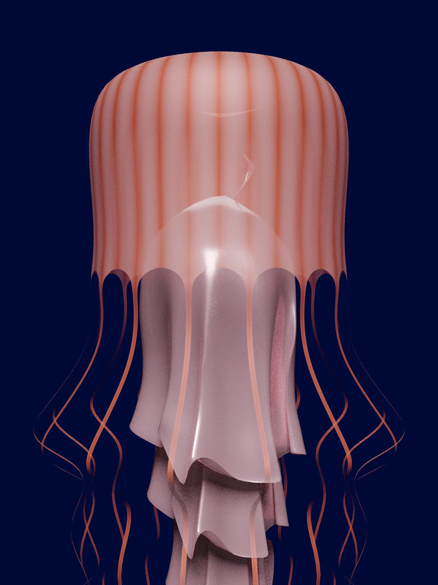
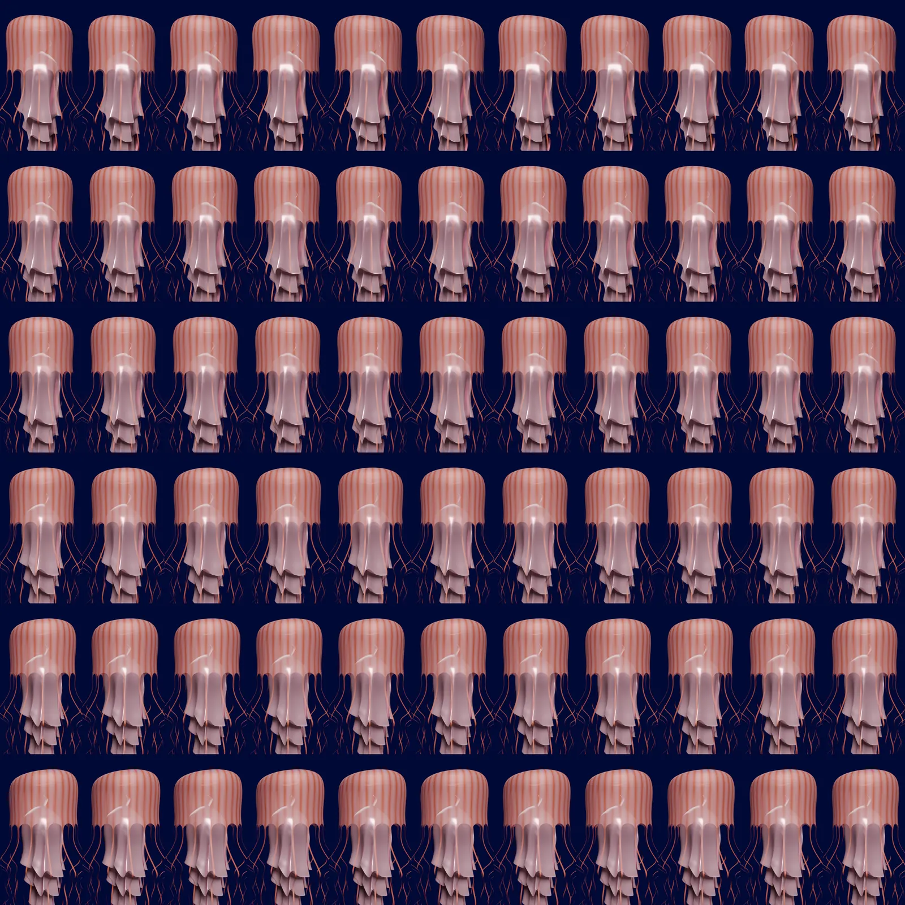
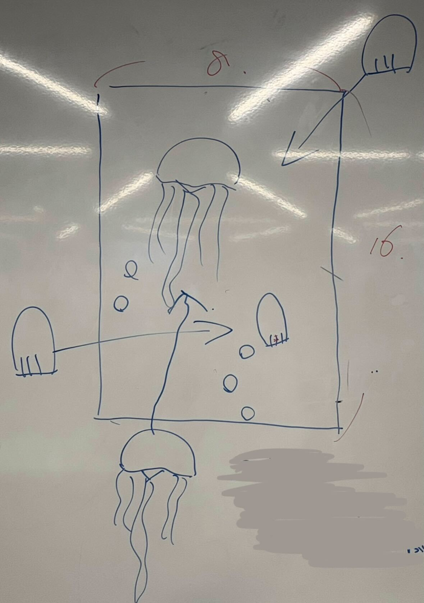
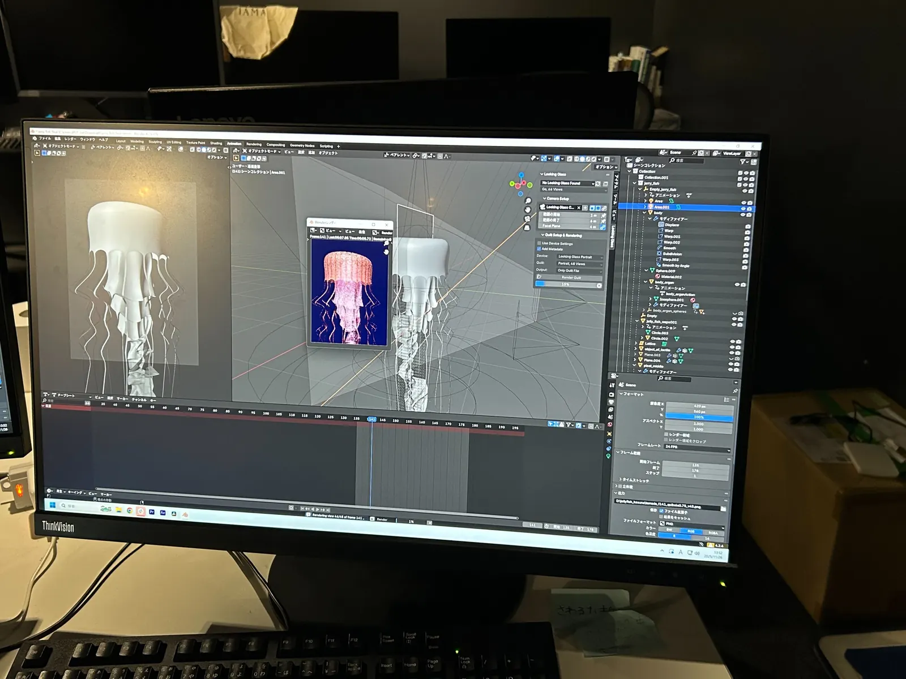
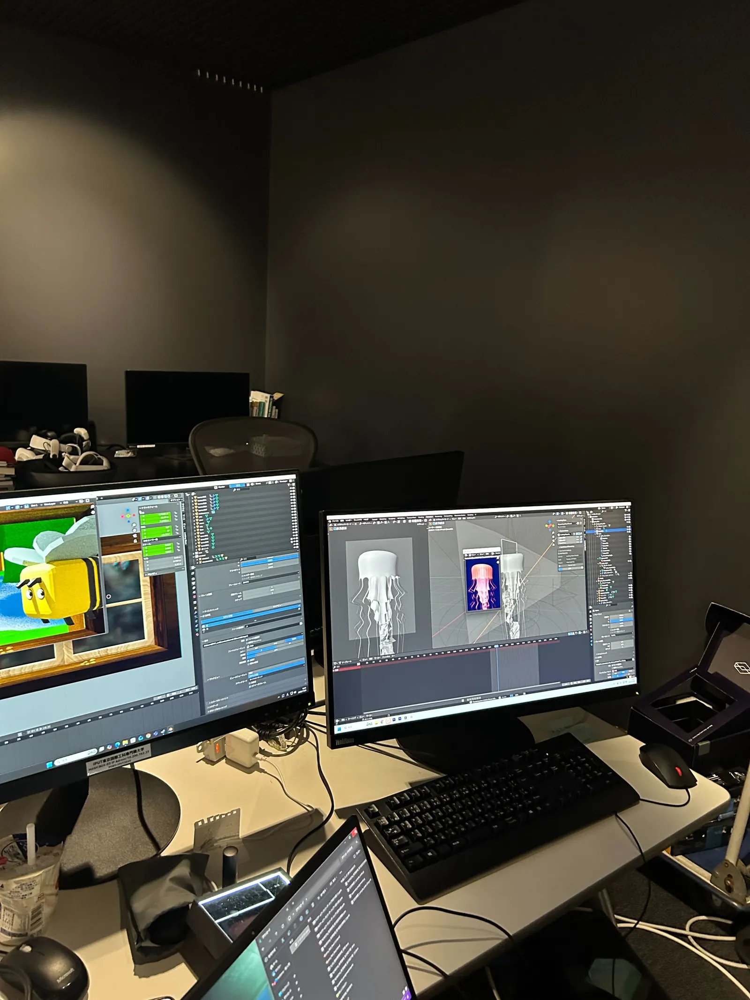
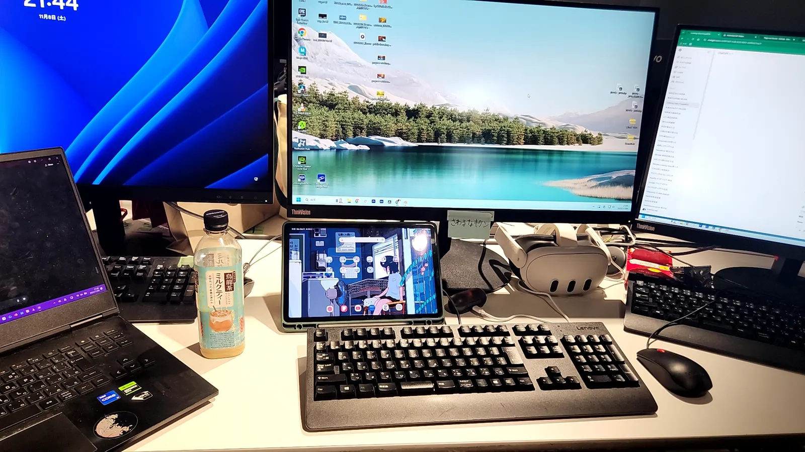
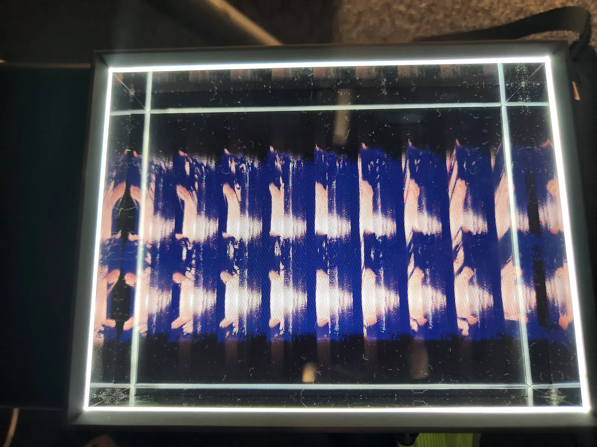
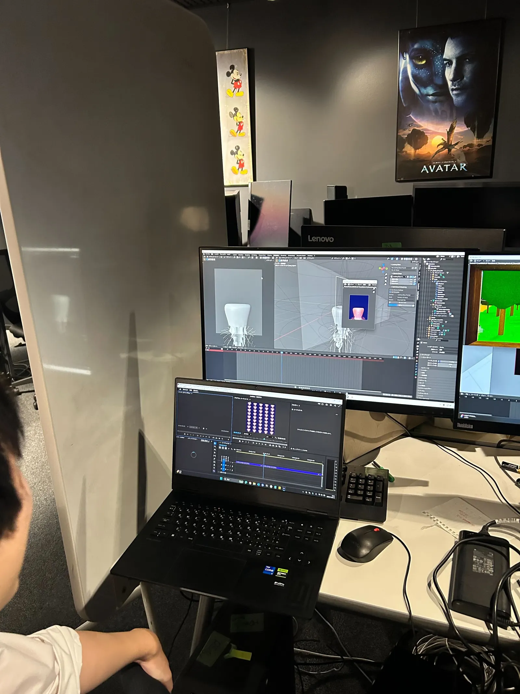

傘と触手をつくる
傘の丸みや内部の層、触手の長さと本数を別々に調整しました。静止画では成立していても、動くと形のバランスが崩れるため、モデリングとアニメーションを行き来しながら確認しました。
REGIONAL CO-CREATION · 3Dbiz · 2025
Blenderで制作したクラゲを、Looking Glassで立体的に見せるための映像作品です。傘の動き、触手の揺れ、深海の光を組み合わせて、静かに見続けられる映像を目指しました。

PROJECT
地域共創の3Dbiz研究会で、7人のチームで「癒しのクラゲ」を制作しました。水族館で見るクラゲのような、ゆっくりした動きや透明感を、メガネなしで立体視できるLooking Glassで表現することが目標でした。
私は新規クラゲのモデリングとアニメーションを担当しました。先生からも、完成まで持っていければ作品として残せるほど難しい題材だと言われていたため、途中で形だけに妥協せず、動いたときにクラゲらしく見えるかを何度も確認しながら進めました。
JOURNEY
8か月の活動で、作り方もチームの進め方も少しずつ整えていきました。
3Dbiz研究会の活動としてチームを結成し、まずは各自でクラゲのプロトタイプを制作しました。Blenderに慣れるための基礎制作や、クラゲの傘・足の形をつくる試行を重ねました。
当初は操作に反応するインタラクティブな表現も考えていましたが、制作の難易度と期限を踏まえて方針を見直しました。種類を増やすより、限られたクラゲのモデリングとルックに集中する方向へ切り替え、傘はシェイプキー、触手はボーンで動きをつけました。
細かくレンダリングして途中の映像を共有し、動きや見え方を確認しました。Looking Glassでは、遠くまで動かすとクラゲだと分かりにくくなるという先生の指摘を受け、画面の近くでゆっくり見せる構図に調整しました。
MAKING
傘の丸みや内部の層、触手の長さと本数を別々に調整しました。静止画では成立していても、動くと形のバランスが崩れるため、モデリングとアニメーションを行き来しながら確認しました。
傘の収縮と触手の揺れを組み合わせ、単なる上下移動ではなく、水の中を漂うような動きを探りました。速度、動く幅、触手の遅れ方を少しずつ変えながら、硬く見えない動きを目指しました。
背景を暗くして、クラゲの透明感と淡い色が見える画面を考えました。写実性だけに寄せず、少し神秘的で落ち着く雰囲気を目指しています。細かな粒子や気泡も試しましたが、近くでクラゲを見せる構図では遠近感や再現性の調整が難しかったため、最終表現には入れませんでした。


RENDERING
動画レンダリングには想像以上に時間がかかり、複数のPCで処理しても数日必要になることがありました。だからこそ、作業が一段落するたびに小さくレンダリングして確認し、完成直前に問題が見つからないように進めました。




FILMS
気泡を加えた試作、完成形に近いループ映像、Looking Glassでの立体視確認をまとめています。
気泡を加えた表現を試した段階の記録です。雰囲気は良くなりましたが、近くで見せる構図では気泡との遠近感や、気泡そのものの再現性を整える難しさがありました。最終版では要素を絞り、クラゲそのものが見えやすい表現にしています。
遠くまで動かす案も試しましたが、クラゲだと分かりにくくなるという指摘を受け、近い位置でゆっくり見せる構図に調整しました。
Looking Glassで表示したときの奥行きや距離感を確認した記録です。画面上の見え方とは別に、立体表示での見え方も調整しました。

TAKEAWAY
今回、自分にとって一番大きな課題は触手でした。実際のクラゲは細い触手が一本一本別々に動いていますが、今回の作品ではそこまで表現しきれませんでした。悔しさは残りましたが、細部を省略したままでは生き物らしさが弱くなること、そして「どこまで作り込むか」を最初に考える重要性を学びました。次に制作するときは、触手ごとの遅れや流れ方まで観察し、動きの設計から取り組みたいです。